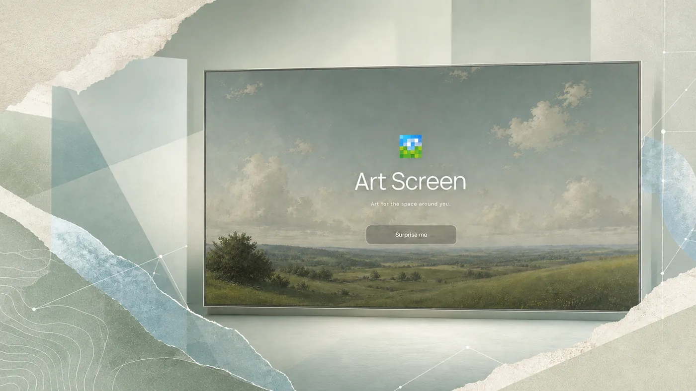
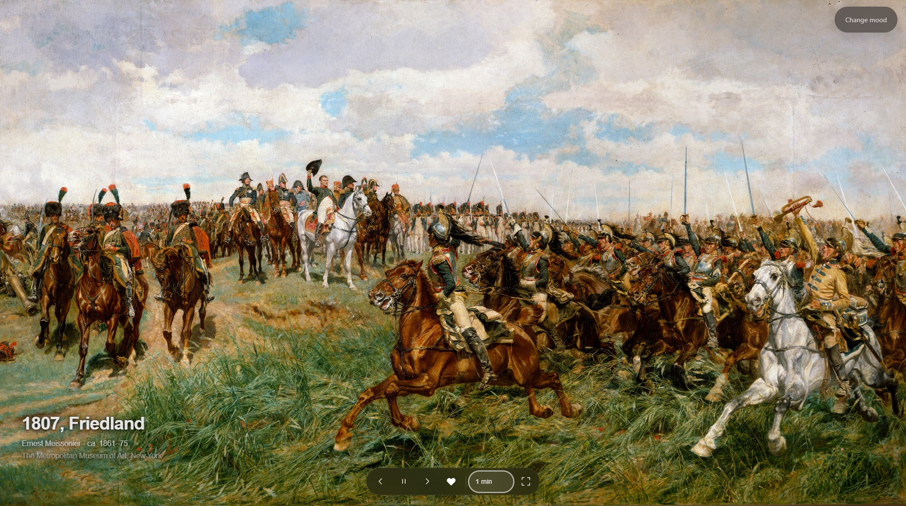

← Todos os projetos
06 / DESIGN ENGINEERING
Art Screen — Galeria Digital
Da concepção à aplicação funcional para contemplar arte.
Concepção · UI · Front-end · Integração com API

O Art Screen transforma uma tela, especialmente um segundo monitor, em uma galeria digital pessoal. A pessoa escolhe uma atmosfera e deixa a obra ocupar a tela com controles discretos.
- Desafio
- Criar uma experiência de contemplação com pouca interferência da interface.
- Minha contribuição
- Concepção, UI, front-end e integração com a API.
- Entrega
- Aplicação funcional publicada com obras Open Access do Met.
01 / DECISÃO
Uma pausa intencional.
Reduzi os controles visíveis durante a contemplação para manter a atenção nas obras. Curadoria, interface e transições formam um fluxo contínuo.

02 / DESIGN E CÓDIGO
O projeto foi além do Figma.
Concebi a experiência, desenhei a UI e desenvolvi o front-end em HTML, CSS e JavaScript. A integração com a Collection API do Metropolitan Museum of Art fornece obras Open Access para a aplicação funcional.